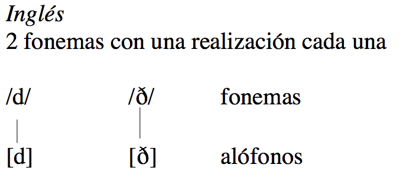
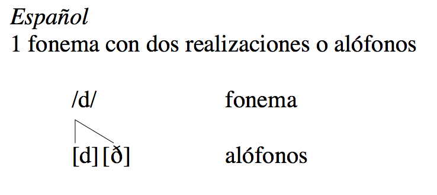
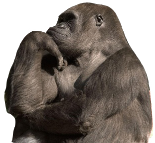

Fonética y español oral
El fonema, los alófonos y la transcripción fonética
Joseph V. Casillas
Instituto Franklin: otoño 2015
Fonema vs. alófono
Fonema vs. alófono
Los sonidos [d] y [ð] existen en inglés y en español
| Inglés | Español | |||
|---|---|---|---|---|
| [d] | [d] | |||
| dump | lea |
saldo | ha |
|
| rude | wea |
doy | na |
|
| down | wi |
cuando | mi |
Fonema vs. Alófono


Sin embargo, los sonidos [d] y [ð] funcionan de modo diferente en inglés y en español.
Español
- [ð]: no me
d en (do not give me) - [d]: pon 'den' (write den)
Inglés
- [ð]:
th en [ð] - [d]: den [d]
Fonema vs. Alófono

- En inglés, establecen diferencias de significado, son contrastivos:
- then [ð]
- den [d]
- then y den son cosas diferentes. Hay dos fonemas.
Fonema vs. Alófono

- En español, [ð] y [d] son variantes de un 'sonido' básico.
- La palabra 'den' en estas frases es la misma, a pesar de que se pronuncia diferente:
- no me den [ð] 'do not give me'
- pon ‘den’ [d] 'write "den"'
- [ð] y [d] son dos variantes (alófonos) del mismo fonema.


Definamos
- Fonema: La unidad mínima que puede cambiar el significado de una palabra. Es una representación abstracta de uno o más sonidos (estos sonidos se llaman alófonos).
- /ˈpe.so/
- /ˈbe.so/
Definamos
Las realizaciones de /b/ en "un beso" y "ese beso" son distintas pero no representan dos fonemas porque el significado de la palabra no cambia.
- Alófono: La realización específica y concreta de un fonema.
- Un beso [um.ˈbe.so]
- Ese beso [e.se.ˈβe.so]
Repasemos
- Fonema: representación abstracta y generalizada de un sonido
- se escribe entre //
Alófono : cada realización concreta y específica de un fonema- se escribe entre [ ]
Pensemos

- ¿Cómo sabemos si dos sonidos cambian el significado y por ello pertenecen a dos fonemas diferentes?
- Si podemos formar un par mínimo.
- Un par mínimo es un par de palabras que sólo se diferencian en la pronunciación en un sonido y esa diferencia establece diferencias de significado.
- 'Then' vs. 'den' representan un par mínimo en inglés.
Pares mínimos
| Par mínimo | Transcripción fonémica | Significado |
|---|---|---|
| den | /ˈden/ | 'guarida' |
| then | /ˈðen/ | 'entonces' |
| /ˈpa.ta/ | 'leg' | |
| /ˈba.ta/ | 'gown' | |
| lapa | /ˈla.pa/ | 'barnacle' |
| lava | /ˈla.va/ | 'lava' |
| /ˈto.ma/ | 'take' | |
| /ˈdo.ma/ | 'taming' | |
| casa | /ˈka.sa/ | 'house' |
| gasa | /ˈga.sa/ | 'gauze' |

¿Fonema o alófono?
Preguntas para determinar si dos sonidos son fonemas diferentes o variantes del mismo fonema:
Español
- ¿Establecen diferencias de significado en español [ð] y [d]? No.
- ¿Cómo lo sé? ¿Existe algún par mínimo en español entre [ð] y [d]? No.
- Por lo tanto, [ð] y [d] en español pertenecen a la misma categoría/clase abstracta.
- [ð] y [d] son alófonos (realizaciones) del mismo fonema.
¿Fonema o alófono?
Preguntas para determinar si dos sonidos son fonemas diferentes o variantes del mismo fonema:
Inglés
- ¿Establecen diferencias de significado en inglés [ð] y [d]? Sí.
- ¿Cómo lo sé? ¿Existen pares mínimos en inglés entre [ð] y [d]? Sí. Por ejemplo, 'den' y 'then'.
- Por lo tanto, [ð] y [d] en inglés pertencen a dos categorías/clases abstractas diferentes. Son dos fonemas.
- [ð] y [d] son alófonos (realizaciones) de dos fonemas diferentes: /ð/ y /d/.
Repasemos
- El fonema es un concepto abstracto.
- El alófono es la representación de un sonido.
- Los fonemas no se articulan, pero los alófonos sí.
- Los fonemas cambian el significado, los alófonos no.
- Para saber si un sonido es fonema o no hay que intentar establecer un "par mínimo".
Repasemos
- Todos los fonemas tienen al menos un alófono, pero no al revés.
- Transcripción fonética: [ ] (representación exacta de los sonidos).
- Transcripción fonológica: / / (representación abstracta).
- Lo que es un fonema en un idioma, puede ser un alófono en otro.